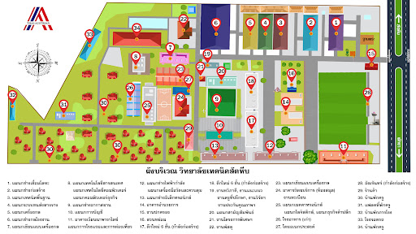

.PNG)
ประวัติความเป็นมา
ที่ตั้ง
เลขที่ 193 หมู่ 3 ถนนสุขุมวิท ต.นาจอมเทียน อ.สัตหีบ จ.ชลบุรี มีเนื้อที่ 64 ไร่ 3 งาน 20 ตารางวา
การจัดตั้ง
วิทยาลัยเทคนิคสัตหีบ สังกัดกองวิทยาลัยเทคนิค กรมอาชีวศึกษา กระทรวงศึกษาธิการ ได้จัดตั้งขึ้นตามข้อตกลงระหว่างรัฐบาลไทยกับรัฐบาลสาธารณรัฐออสเตรีย
โดยรัฐบาลสาธารณรัฐออสเตรีย เสนอให้ความช่วยเหลือด้านวิชาการ เครื่องจักร เครื่องมือ และคณะผู้เชี่ยวชาญมาช่วยให้คำแนะนำเกี่ยวกับการติดตั้งการทำงานของเครื่องจักรกล
และการฝึกอบรมนักเรียน นักศึกษา ส่วนรัฐบาลไทย เป็นผู้จัดหาที่ดินทำการก่อสร้างอาคารเรียนโรงฝึกงาน และสิ่งก่อสร้าง อื่น ๆ ตามที่ทั้งสองฝ่ายเห็นชอบ
ประวัติสถานศึกษา
วิทยาลัยเทคนิคสัตหีบก่อตั้งเมือวันที่ 1 กันยายน พศ. 2512 ภายใต้โดยความร่วมมือระหว่างรัฐบาลไทยและรัฐบาลสาธารณรัฐออสเตรียในสมัยนั้น ใช้ชื่อภาษาอังกฤษว่า Thai-Austrian Technical School. ภาษาไทยคือ โรงเรียนเทคนิคสัตหีบ
ณ บ้านอำเภอ ต.นาจอมเทียน อ.สัตหีบ จ.ชลบุรี มีเนื้อที่ทั้งสิ้น 64 ไร่ 3 งาน 20 ตารางวา โดยประเทศไทยจัดหาสถานที่ ก่อสร้างอาคารเรียน อาคารฝึกงาน และรัฐบาลสาธารณรัฐออสเตรียให้การสนับสนุนด้านเครื่องมือเครื่องจักร ส่งผู้เชี่ยวชาญเข้ามาช่วยเหลือฝึกอบรมการใช้เครื่องมือเครื่องจักรในการจัดเรียนการสอนให้กับครูและนักเรียน รวมถึงให้ทุนฝึกอบรมกับครูไทยในการเข้าฝึกอบรม ณ ประเทศออสเตรีย
ในปีการศึกษา 2539 วิทยาลัยเทคนิคสัตหีบ ได้รับเลือกให้เป็นสถานศึกษาดีเด่น ฯพณฯ ท่านรัฐมนตรีว่าการกระทรวงศึกษาธิการ นายสรอรรถ กลิ่นประทุม ได้มอบโล่รางวัลดีเด่น โดยมีนายวิชัย ป้อมประเสริฐ ผู้อำนวยการวิทยาลัยเทคนิคสัตหีบในครั้งนั้นเป็นผู้รับมอบ และวิทยาลัยเทคนิคสัตหีบ ยังได้รับรางวัลพระราชทานจากสมเด็จพระเทพรัตนราชสุดาฯ ในปีการศึกษา 2534 ในฐานะสถานศึกษาดีเด่นในระดับอุดมศึกษาของเขตการศึกษาที่ 12 ปี พ.ศ. 2536 และเปิดทำการสอนหลักสูตรประกาศนียบัตรครูเทคนิคชั้นสูง (ปทส.) หลักสูตร 2 ปี มีฐานะเทียบเท่าระดับปริญญาตรีในสาขาวิชาเครื่องกล และเปิดสอนในสาขาวิชาเครื่องมือกลอีก 1 สาขา ในปีการศึกษา 2537
นอกจากนี้วิทยาลัยเทคนิคสัตหีบ ยังเป็นศูนย์การศึกษาของนักศึกษาสถาบันราชภัฏฉะเชิงเทรา (ในขณะนั้น) ในสาขาวิชาวิทยาศาสตร์โปรแกรมวิชาเทคโนโลยีอุตสาหกรรม ซึ่งเปิดทำการเรียนการสอนตั้งแต่ ปีการศึกษา 2536 ถึงปีการศึกษา 2540 มีทั้งสิ้น 5 สาขา คือ
1. เทคโนโลยีก่อสร้าง
2. เทคโนโลยีการผลิต
3. เทคโนโลยีเครื่องกล
4. เทคโนโลยีไฟฟ้า
5. เทคโนโลยีอิเล็กทรอนิกส์
วิทยาลัยเทคนิคสัตหีบยังได้รับการคัดเลือกจากกรมอาชีวศึกษาเข้าร่วมพัฒนาเครื่องมือ อุปกรณ์ และบุคลากรในสถานศึกษา โดยได้รับเงินกู้จากสำนักงาน OECF ประเทศญี่ปุ่น ซึ่งจะมอบให้กรมอาชีวศึกษาเป็นเงินทั้งสิ้น 1,913.3 ล้านบาท และเงินสมทบจากรัฐบาลไทยอีก 569 ล้านบาท ทั้งนี้วิทยาลัยเทคนิคสัตหีบเป็น 1 ใน 10 วิทยาลัยที่จะมีส่วนได้รับเงินจำนวนหนึ่ง จากยอดดังกล่าวจะนำมาพัฒนาแผนกช่างเทคนิคการผลิต และช่างกลโรงงานเพื่อเป็นศูนย์กลางการศึกษาในภาคตะวันออก ระยะเวลาโครงการตั้งแต่ ปี พ.ศ. 2537-2541
